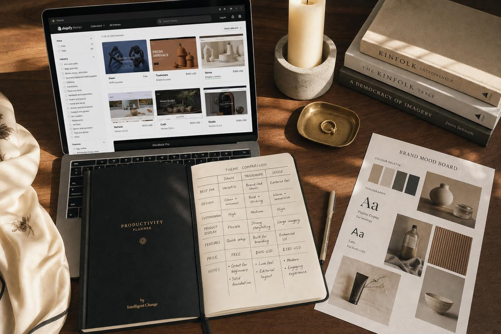
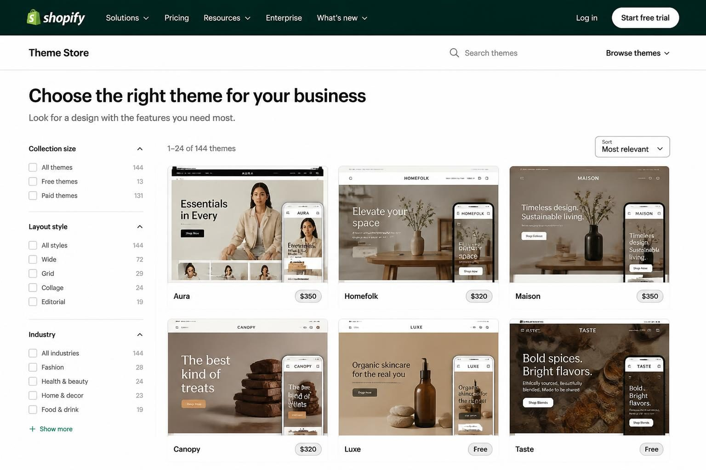
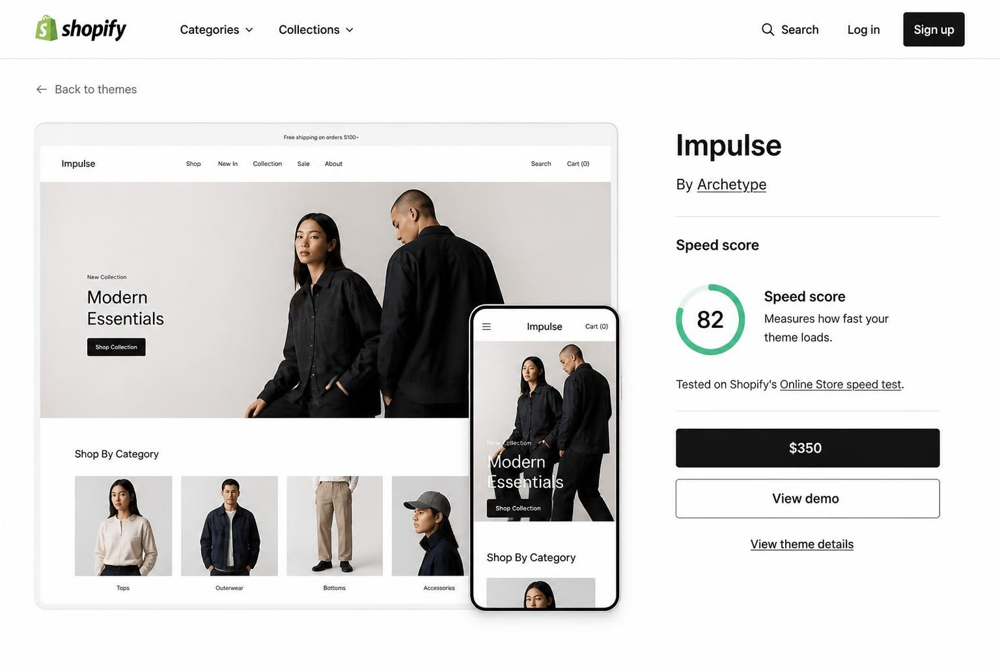
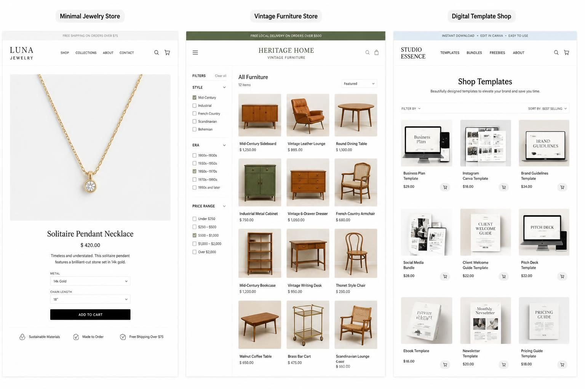
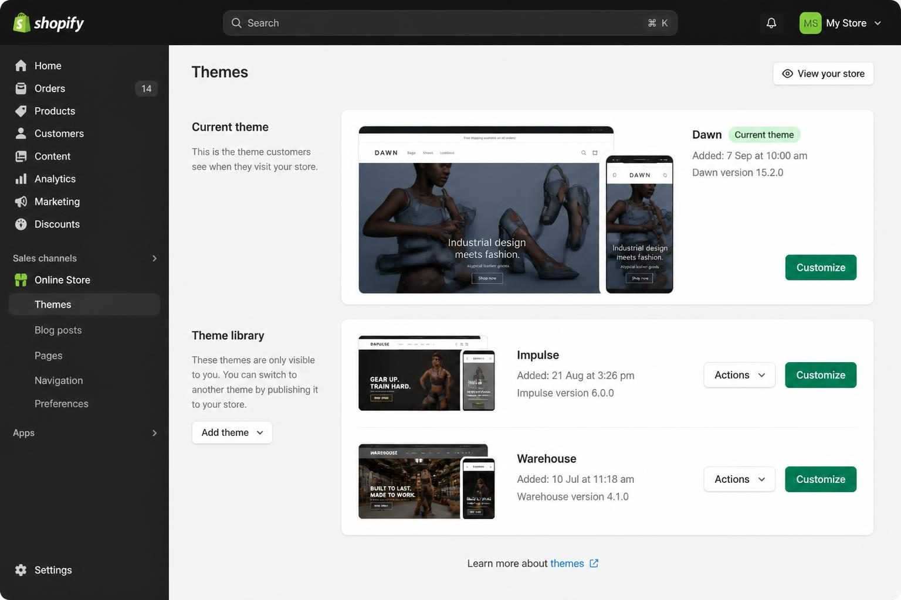

HOW TO USE THE SHOPIFY THEME STORE TO FIND THE RIGHT TEMPLATE FOR YOUR PRODUCT-BASED BUSINESS

The Shopify theme store contains just 268 themes - not thousands. That number matters because your theme choice directly affects how fast your store loads, how professional it looks, and whether visitors actually buy from you. Most product sellers browse the store by "popular" or "new," pick something that looks nice in the demo, and realize three months later that their theme slows their mobile site to a crawl or lacks basic features their business needs.
If you sell physical or digital products online, your theme is not just a design decision. It is a business decision that affects your conversion rate, your customer experience, and how much time you spend fighting with apps that do not play nicely together.
Here is the honest reality: two themes - Dawn and Trademark - power roughly 25% of all Shopify stores. If you install either one without serious customization, your store will look nearly identical to one in six competitors. That is not a branding strategy. That is blending into the background.
This post covers how to actually evaluate themes before you commit, which filters matter and which are marketing fluff, and how to avoid the expensive mistakes that turn a simple theme switch into a week-long technical headache.
WHY THE THEME STORE HAS FAR FEWER OPTIONS THAN YOU THINK
Most people assume Shopify's theme store works like an app store - endless options for every possible need. The reality is different. As of 2025-2026, the official Shopify Theme Store lists only 268 themes total. That is a curated, quality-controlled selection, not a marketplace free-for-all.
This limited selection is actually strategic. Every theme in the official store must meet Shopify's code quality standards, support Online Store 2.0 architecture, and pass performance benchmarks. Themes that do not meet these standards simply do not get listed.
So what does this mean for your theme search?
It means your choice matters more than you might realize. With 268 options instead of 2,000, you are selecting from a pool where each theme serves a specific purpose. Understanding what differentiates them - catalog size support, visual style, built-in features - becomes essential.
The concentrated market also explains why certain themes dominate. Dawn (Shopify's free flagship theme) powers 139,162 stores, representing 16.65% of all Shopify stores according to Meetanshi's 2025 analysis. Trademark sits even higher at 23.1% market share according to Uptek's research. Together, these two themes represent roughly one in four Shopify stores you will ever visit.
This is not necessarily bad - these themes are popular because they work well. But if differentiation matters to your brand, you need to think beyond the defaults.

THE FREE VERSUS PREMIUM DECISION MOST SELLERS GET BACKWARDS
Here is something most Shopify guides will not tell you: free themes in 2026 include features that were premium-only two or three years ago. The gap between free and paid has narrowed significantly - and for many product sellers, free is genuinely enough.
Shopify's free themes (Dawn, Refresh, Sense, and others) now include:
- Flexible sections on every page type, not just the homepage
- Built-in product recommendations based on customer behavior
- Reviews integration without requiring a separate app
- Quick-buy functionality for faster checkout
- Color swatches and variant pickers
- Mega-menu support for stores with large catalogs
When does premium actually make sense?
Premium themes (typically $180-$350) justify their cost in specific situations. If you sell 200+ products across multiple collections, you likely need advanced filtering that most free themes lack. If your brand relies heavily on storytelling and editorial content, premium themes like Prestige or Empire offer layouts designed for that purpose.
A handmade ceramics seller with 30 products does not need a $350 theme built for a fashion retailer with 500 SKUs. The ceramics seller would be better served by Dawn customized thoughtfully, with the $350 saved for professional product photography or paid advertising.
The calculation is simple: will the premium features directly increase your conversion rate enough to pay back the theme cost within 90 days? If you cannot point to a specific feature that answers a specific problem your current setup creates, free is likely the right choice.
THE ONLINE STORE 2.0 REQUIREMENT YOU CANNOT IGNORE
If you are considering any theme - free, premium, or third-party - that was built before 2021 and has not been updated, stop. Online Store 2.0 compatibility is no longer optional. It is the foundation that determines whether your store can use Shopify's newest and most powerful features.
Online Store 2.0 introduced several capabilities that directly affect your ability to sell:
Metafields everywhere. Before OS 2.0, adding custom product information (care instructions, sizing details, material composition) required either code modifications or third-party apps. Now you can create custom fields and display them on any page without touching code.
Sections on every page. Legacy themes only allowed flexible section editing on the homepage. OS 2.0 themes let you add, remove, and rearrange content blocks on product pages, collection pages, blog posts, and custom pages.
App blocks instead of app embeds. Modern apps integrate cleanly into your theme's section structure instead of injecting code that can conflict with other apps or break during theme updates.
What happens if you use a legacy theme?
You create technical debt. Every new Shopify feature release, every app update, every improvement to the platform - you miss it. Your competitors using modern themes get features automatically. You get workarounds, or nothing.
When evaluating any theme, check the "Built for" specification in its Theme Store listing. It should explicitly state Online Store 2.0 support. If you are looking at a third-party theme from ThemeForest or another marketplace, verify OS 2.0 compatibility directly with the developer before purchasing.
SPEED SCORES: THE NUMBER THAT AFFECTS YOUR REVENUE
Every theme in Shopify's Theme Store now displays a speed score. This is not a vanity metric. A slow theme directly costs you sales - particularly on mobile, where 60% or more of your traffic likely originates.
Here is how speed affects your business:
Mobile shoppers abandon slow sites fast. Research consistently shows that mobile conversion rates drop significantly when page load times exceed 3 seconds. A theme that loads in 1.5 seconds on desktop might take 5+ seconds on a mid-range smartphone over a cellular connection.
Google penalizes slow pages. If you run Google Shopping ads or rely on organic search traffic, slow page speeds increase your cost-per-click and lower your rankings. You pay more to reach fewer people.
The speed score displayed on each theme listing represents performance under controlled conditions - a clean install with demo content. Your actual speed will differ based on:
- How many apps you install (each adds code that must load)
- The size and optimization of your product images
- Any custom code modifications you or a developer add
- Third-party scripts like analytics, chat widgets, or review apps

How to use speed scores correctly:
Compare themes within the same category. A minimal theme for a 20-product store will naturally score higher than a feature-rich theme designed for 500+ SKUs. Compare Dawn to Taste, not Dawn to Warehouse.
Test with your actual products. After narrowing to 2-3 finalists, install each on a development store and upload your real product images. Run Google PageSpeed Insights on the actual result, not the demo.
THE STEP-BY-STEP PROCESS FOR CHOOSING YOUR THEME
Most sellers browse themes randomly, get overwhelmed by options, pick one that looks good in the demo, and regret it later. Here is the systematic approach that prevents expensive mistakes.
Step 1: Document your actual requirements first.
Before opening the Theme Store, answer these questions in writing:
- How many products do you sell? (Under 50, 50-200, or 500+)
- Do you need advanced filtering by size, color, material, or price?
- Will you use subscription apps? Which ones specifically?
- Do you sell physical products, digital downloads, or both?
- How image-heavy is your brand? Lifestyle photography or clean product shots?
- Do you need blog functionality integrated into the store experience?
Step 2: Use the Theme Store filters correctly.
Navigate to themes.shopify.com and use the filters deliberately. Start with catalog size - this alone eliminates themes designed for businesses unlike yours. Then filter by layout style (grid for large catalogs, editorial for storytelling brands). Sort by speed performance, not popularity.
Step 3: Test with your actual content.
Use the "Try theme" button on your 3-4 finalists. Upload YOUR product photos, not the demo images. Write YOUR product descriptions. Test YOUR navigation structure. Check whether your longest product title breaks the layout and whether your product images crop awkwardly in the grid view.
Step 4: Verify app compatibility before purchasing.
List every app you currently use or plan to use. For critical apps - particularly subscriptions, reviews, and upsells - email both the theme developer AND the app developer asking specifically about conflicts. Do this before spending $350.
Step 5: Check developer support quality.
Google "[theme name] + problems" and "[theme name] + support." Read the 1-star reviews on the Theme Store, focusing on patterns: slow support responses? Breaking updates? Poor documentation? When your store breaks during your biggest sale, developer response time matters enormously.
Step 6: Install on a development store first.
Never install a new theme on your live store during business hours. Clone your store or use Shopify's development store feature. Rebuild your navigation, test the entire checkout flow, verify all links work correctly.
MATCHING YOUR THEME TO YOUR SPECIFIC PRODUCT BUSINESS
Different product businesses have genuinely different needs. A handmade jewelry seller faces different challenges than a vintage furniture reseller or a digital template shop. Here is how to think about theme matching for common product business types.
Low SKU count, high imagery (handmade goods, artisan products):
You need a theme that showcases large, detailed product photography without cluttering the page. Look for themes with image-focused product pages, gallery-style layouts, and minimal visual noise. Dawn (free) and Narrative work well here. Avoid themes designed for mega-catalogs - the advanced filtering and mega-menus will feel empty with 40 products.
High SKU count, collections-heavy (vintage goods, resellers, variety stores):
You need aggressive filtering, quick-view functionality, and navigation that handles 30+ collections without overwhelming visitors. Warehouse and Impulse serve this use case well. The mega-menu becomes essential when customers need to find specific items in a sea of inventory.
Subscription-based products (consumables, boxes, refills):
Verify - before purchasing - that your chosen subscription app (Recharge, Bold, Skio) integrates cleanly with your theme. Some themes handle subscription widgets beautifully; others require code modifications that break during updates. Check the app's documentation and the theme developer's knowledge base for compatibility notes.
Digital products (templates, printables, courses):
You need instant digital delivery, minimal checkout friction, and no shipping-related interface elements confusing your customers. Many free themes work here if you hide shipping sections and install a reliable digital delivery app. Just verify the theme does not force shipping fields into the checkout experience.
If you are still weighing whether Shopify is the right platform for your specific situation, make that decision first. Theme selection only matters once you have committed to the platform.

THIRD-PARTY THEME MARKETPLACES: THE TRADEOFFS NOBODY EXPLAINS
ThemeForest, Out of the Sandbox, and other third-party marketplaces offer alternatives to Shopify's official Theme Store. Before you buy outside the official store, understand what you are trading.
More variety, less quality control.
Third-party marketplaces list hundreds of additional themes. Some are excellent. Some are poorly coded, rarely updated, and break with every Shopify platform update. The official Theme Store's curation means every listed theme meets baseline standards. Third-party marketplaces have lower barriers to entry.
OS 2.0 support is not guaranteed.
Many ThemeForest themes were built for Shopify's older architecture and have not been updated. Verify Online Store 2.0 support explicitly with the developer before purchasing. Do not assume.
Support quality varies wildly.
Official Theme Store themes require developers to provide ongoing support. Third-party themes may offer support through the marketplace's system, through the developer directly, or barely at all. When your store breaks at 11pm on Black Friday, the difference between 2-hour response and 5-day response is significant.
Refund policies differ.
Shopify offers a 14-day refund window for themes purchased through their store. Third-party marketplaces have their own policies - some restrictive, some reasonable. Read the terms before purchasing.
When third-party themes make sense:
If you need a highly specific layout that does not exist in the official store, a third-party option might be worth the tradeoffs. Out of the Sandbox, for example, is a respected developer whose themes meet high standards. But for most product sellers, the official Theme Store offers sufficient variety without the risks.
If you are comparing Shopify to other platforms entirely, the decision between Shopify and Wix for ecommerce depends heavily on whether you sell primarily products or services.
THE MIGRATION PROBLEM NOBODY WARNS YOU ABOUT
Switching themes on an existing store is not like changing your phone wallpaper. Theme migration creates real technical challenges that can cost you days of work and potentially affect your SEO and sales.
Here is what actually happens when you switch themes:
Your customizations disappear. Every section you carefully arranged, every color you adjusted, every custom code snippet your developer added - gone. The new theme starts fresh. You rebuild from scratch.
App integrations may break. Apps that embedded themselves in your old theme's code need to be reconnected to your new theme. Some reconnect automatically. Some require manual reinstallation. Some flat-out do not work with your new theme.
Navigation structure resets. Your carefully organized menu structure may not transfer. Collections display differently. Mega-menus in your old theme become simple dropdowns in your new theme (or vice versa).
SEO redirects are your responsibility. If your new theme changes URL structures for collections or pages, you need to set up redirects manually. Broken links hurt your Google rankings.
How to migrate themes without disaster:
Document everything in your current theme before touching anything. Screenshot every page. Note every app integration. List every custom code modification.
Install the new theme alongside your existing one - do not replace it immediately. Shopify allows multiple themes; only one can be live. Build out your new theme completely while your store continues running on the old one.
Test obsessively before going live. Check every product page, every collection, every checkout step, every app integration. Test on mobile and desktop. Test in different browsers.
Schedule the switch during your lowest-traffic period, not the day before a promotion.

FREQUENTLY ASKED QUESTIONS
Are premium Shopify themes actually worth paying for?
Premium themes justify their cost when they solve a specific problem your free theme cannot. If you need advanced filtering for 200+ products, editorial layouts for brand storytelling, or specific features like mega-menus that free themes lack, premium is worth it. If you sell under 50 products and need basic functionality, free themes in 2026 likely meet your needs.
What is the best place to buy a Shopify theme?
The official Shopify Theme Store at themes.shopify.com offers the safest option with guaranteed quality standards, OS 2.0 support, and refund protection. Third-party marketplaces like Out of the Sandbox offer additional variety, but verify code quality and support policies before purchasing. ThemeForest has the most variety but the highest risk of poorly maintained themes.
Is it safe to buy a Shopify theme outside the official store?
It can be safe if you verify the developer's reputation, confirm Online Store 2.0 compatibility, and understand the support and refund policies. Respected developers like Out of the Sandbox maintain high standards. Unknown developers on general marketplaces carry more risk. Always check reviews and ask about ongoing update policies.
What is the best Shopify theme for a clothing brand?
For clothing, look for themes with strong image galleries, color swatches, size guides, and lookbook functionality. Impulse and Prestige handle fashion well with editorial layouts and strong visual focus. Dawn works for minimalist brands with smaller catalogs. The "best" depends on your catalog size - a 500-SKU fashion retailer needs different features than a 30-SKU boutique.
Should I stick with free themes or does it look unprofessional?
Free Shopify themes in 2026 look completely professional when customized thoughtfully. Dawn powers over 139,000 stores including successful brands. The difference between professional and unprofessional comes from your product photography, your copy, and how well you customize the theme - not whether you paid $350 for it.
How do I know if my current theme is outdated?
Check if your theme supports Online Store 2.0 features like sections on every page and app blocks. If you cannot add or rearrange sections on product pages and collection pages, your theme is likely legacy architecture. Also check your theme's last update date in your Shopify admin - themes not updated in over a year may have compatibility issues with newer Shopify features.
MAKING YOUR THEME CHOICE COUNT
The Shopify theme store is smaller than most people expect - 268 themes, with two options powering a quarter of all stores. That concentrated market means your choice carries real weight. The right theme makes your products look professional, loads fast on mobile, and includes features that help you sell. The wrong theme creates technical headaches, slows your site, and boxes you into workarounds.
Start with your requirements, not the Theme Store. Know your catalog size, your app needs, and your visual priorities before you browse. Use the filters deliberately and test with your actual products, not demo content. Verify app compatibility and developer support quality before committing to premium themes.
Free themes have closed the gap significantly - for many product sellers, Dawn customized well outperforms an expensive theme installed carelessly. The money you save can go toward professional product photography, which affects conversion rates far more than theme aesthetics.
If you are still deciding between Shopify and Etsy for selling your products, make that platform choice first. Your theme decision only matters once you have committed to building on Shopify.
Whatever theme you choose, remember that it is a starting point. Your product photos, your descriptions, your pricing, your customer service - those determine whether visitors become buyers. The theme just gives them a clean, fast, professional place to make that decision.
Let me know in the comments below if you want me to cover any branding or marketing topics in more depth, and I'll make sure to create a blog post about it in the future.